안녕하세요, 가짜연구소 Causal Inference 팀의 김상돈, 김준영입니다.
Introduction to Causal Inference 강의의 11번째 챕터이며, 해당 챕터에서 다루는 내용은 아래와 같습니다.
Contents
- Independence-Based Causal Discovery
- Semi-Parametric Causal Discovery
◦ 강의 영상 링크 : Chapter 11. causal discovery from observational data
작성된 내용 중 개선점이나 잘못된 부분이 있다면 댓글로 알려주세요!
Causal Discovery 의미
- Causal Discovery : Data → Causal graph
- 몇 가지 가정 하에서, causal discovery를 찾는 알고리즘을 적용하여 causal graph를 찾을 수 있음
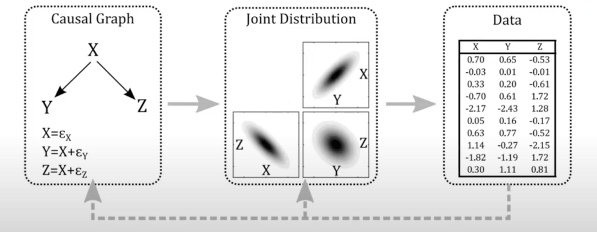
1. Independence-Based Causal Discovery
Assumption
Markov assumption
A node is dependent only on its descendants in the graph
- 예시) 아래 그림에서 \(X_4\)는 \(X_3\)가 조건으로 주어진다면 나머지 변수들과는 독립(조건부 독립)
→ \(P(X_4|X_3,X_2,X_1) = P(X_4|X_3)\)
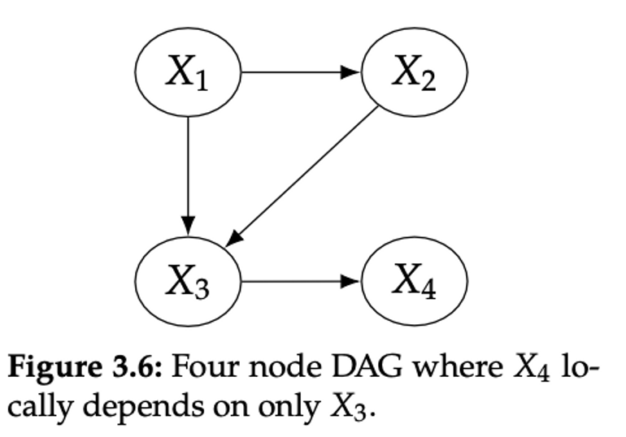
Faithfulness
Node that are causally connected in a particular way in the graph are probabilistically dependent
Faithfulness Conterexample
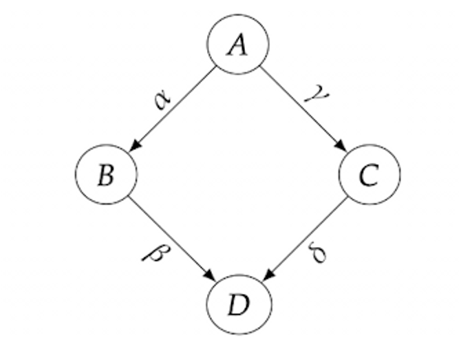
- \[ \begin{aligned} B &:= \alpha A \\ C &:= \gamma A \\ D &:= \beta B + \delta C \\ \newline D &= (\alpha \beta + \gamma \delta) A \end{aligned} \]
- \(\alpha \beta = - \gamma \delta\) 일 때, \(D = 0\)이 됨
- 즉, A → B → D의 효과와 A → C → D의 효과가 서로 반대일 경우 효과가 상쇄됨
- A, D 간에 관계가 없다는 잘못된 결론을 도출할 수 있으므로, 이러한 경우는 없다고 가정함
Causal sufficiency
there are no unobserved confounders of any of the variables in the graph
Acyclicity
still assuming there are no cycles in the graph
Markov equivalent class
- conditional independence 구조가 같은 DAG의 집합을 의미함
- DAG에서 skeleton과 v-structure(immorality)가 같은 경우
Chain/Fork
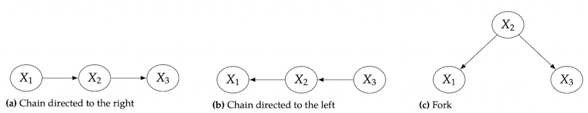
- Markov : \(X_1 \perp\!\!\!\perp X_3 | X_2\)
- Minimality : \(X_1 \not\!\perp\!\!\!\perp X_2 \text{ and }X_2 \not\!\perp\!\!\!\perp X_3\)
- Faithfulness : \(X_1 \not\!\perp\!\!\!\perp X_3\)
- chain/fork에 해당하는 세 그래프 모두 그래프의 형태는 다르지만, 같은 conditional independence 구조를 갖음
Immorality
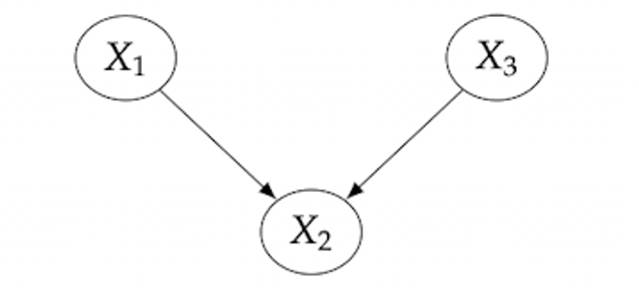
- Markov : \(X_1 \not\!\perp\!\!\!\perp X_3 | X_2\)
- Minimality : \(X_1 \not\!\perp\!\!\!\perp X_2 \text{ and }X_2 \not\!\perp\!\!\!\perp X_3\)
- Faithfulness : \(X_1 \perp\!\!\!\perp X_3\)
- Immorality의 경우 같은 conditional independent 구조를 갖는 그래프는 한 개밖에 없음
Skeletons


- chain/fork 구조의 경우 같은 conditional independence 구조를 갖고, 같은 skeleton을 갖음
- complete 그래프의 의 경우 chain 구조에서 \(X_1 \rightarrow X_3\) edge를 추가할 때, 이전과 다른 conditional independence 구조를 갖고, 다른 skeleton을 갖음
Markov Equivalence via Immoral Skeletons
two graphs are markov equivalent if and only if they have the same skeleton and same immoralities
- Essential graph(CPDAG): skeleton, immorality가 같은 그래프를 의미함
- Markov equivalent class를 만족하는 DAG는 CPDAG로 표현할 수 있음
Example
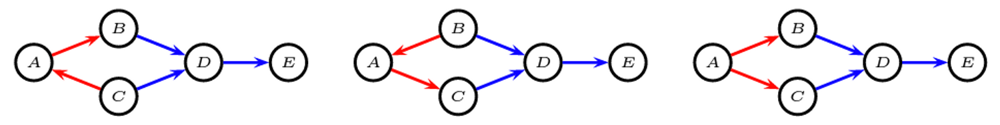

PC algorithm
- 데이터로부터 CPDAG를 찾는 알고리즘
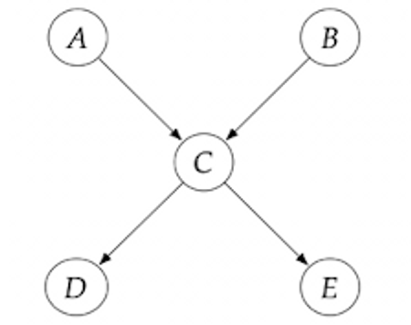
1. Identify the skeleton

- 노드 간 완전연결된 complete graph 생성
- complete graph에서 두 노드 간 unconditionally independent인 경우 edge 제거
- \(A,\, B\)는 immorality이므로 \(A\perp\!\!\!\perp B\), edge 제거
- 모든 쌍 \((X, Y)\)에 대해 \(X\perp\!\!\!\perp Y|{Z}\)인 경우 edge 제거
- \(C\)에 대해 conditioning 했을 때, conditionally independent라는 의미는 두 노드 간 직접 연결된 edge가 없다는 의미로 볼 수 있음
- \(A\)와 \(E\)에 직접 연결된 edge가 사라짐
- 나머지 노드도 동일한 접근 방식으로 생각해보면 (c)그래프처럼 true graph의 skeleton을 식별할 수 있음
2. Identify immoralities and orient them
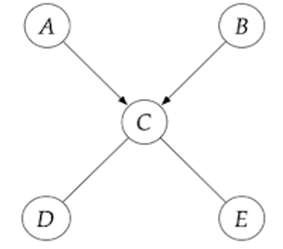
- Immorality의 경우 conditional independent 구조를 갖는 그래프는 한 개밖에 없으므로 방향을 식별할 수 있음
- Immorality의 경우 \(X \not\!\perp\!\!\!\perp Y | Z\) 인 경우에 해당함
- \(A\perp\!\!\!\perp B|{C}\), \(A\perp\!\!\!\perp D|{C}\), \(B\perp\!\!\!\perp C|{E}\), \(A\perp\!\!\!\perp B|{C}\), \(D\perp\!\!\!\perp E|{C}\) 에 대해서, 각각 다 test해보고conditionally dependent가 되는 쌍을 찾음
3. Orient qualifying edges that are incident on colliders
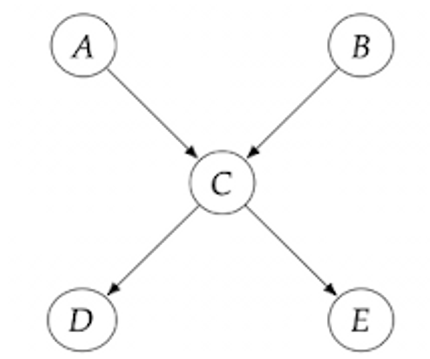
- 남은 edge 중에서 방향을 지정했을 때, immorality가 되지 않는 방향으로 지정
- \(D \rightarrow C\)의 경우 \(A \rightarrow C \leftarrow D\)로 immorality에 해당하므로, \(C \rightarrow D\) 로 방향을 지정해줘야 함
Causal discovery에 관한 다른 방법

- FCI : without assuming causal sufficiency
- CCD : without assuming acylicity
PC 알고리즘 한계점
- 각 노드 쌍의 conditional independence test에 의존하므로 계산량이 많음
- 정확한 test를 하기 위해서는 데이터가 많아야 함
2. Semi-Parametric Causal Discovery
Issues in independence based causal discovery
- Faithfulness assumption 필요
- Large samples for conditional independence tests
- Markov equivalence class만 identify
No identifiability without Parametric Assumptions
1. Markov perspective
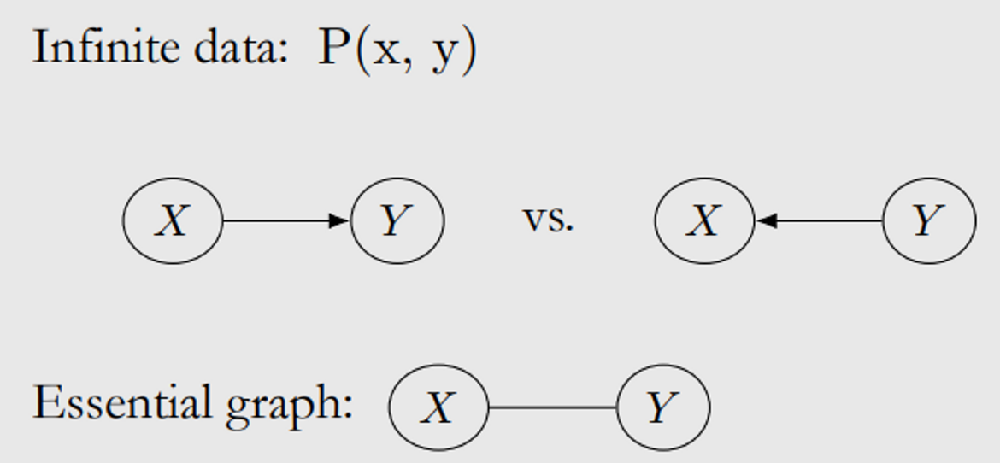
- Markov equivalent인 경우, conditional independence가 \(X→Y\)와 \(X←Y\)구별에 도움 X
- Best는 essential graph X-Y identification
2. SCM perspective
Non-Identifiability of Two-Node Graphs(proposition): For every joint distribution P(x,y) on two real-valued random variables, there is an SCM in either direction that generates data consistent with P(x,y)

- Parametric form SCM에 assumptions을 한다면, 구별 가능!
- 즉, parametric form needs assumptions!
Linear Non-Gaussian Assumption
- Markov Completeness Theorem에 의해 linear with Gaussian noise형태는 그래프 구별이 불가능
- 그렇지만 non-Gaussian인 경우 구별 가능!
\[Y : = f(x) + U\]
\(X\perp\!\!\!\perp U\), and U is non-Gaussian random variable.
Identifiability in linear non-Gaussian setting theorem:
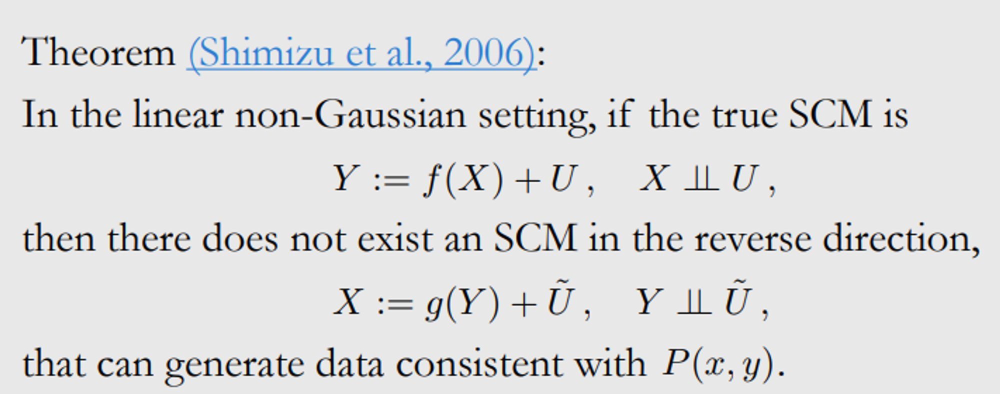
Graphic intuition
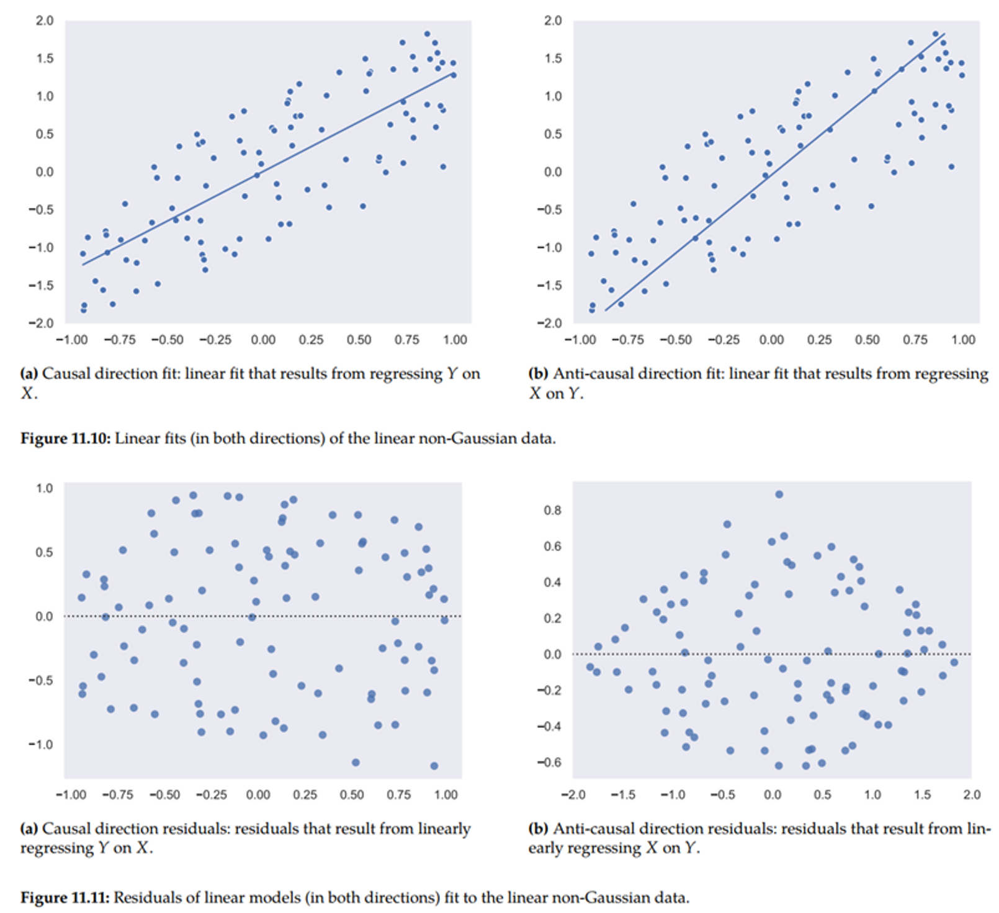
LiNGAM
가정
- Data generating process is linear
- No unobserved confounders
- ⇒ DAG 충족
- Noise follows independent non-Gaussian distribution.
- complete causal structure can be estimated without prior information
- discover direction of causality
- ⇒ Linear, Non-Gaussian, Acyclic Model
- ICA(Independent Component Analysis)
: A statistical technique used for estimating mixing matrix A s.t x=Ae, x is observed and A and e are not.
→ identify linear model
- 독립 성분 분석
- Dimension reduction
- 데이터가 통계적으로 독립이고 정규분포를 따르지 않을 때, 독립성이 최대가 되는 방향으로 축을 삼음
- ⇒ 가장 독립적인 축을 찾음
만일 Gaussian이면 covariance matrix가 항상 같음
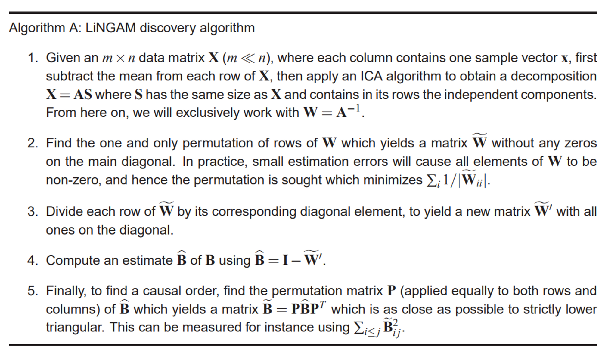
Nonlinear Models
Nonlinear additive noise setting

- Nonlinear의 역할은 non-Gaussianity와 유사causal direction identify 가능
- ⇒ 관측변수들의 symmetry를 깸
- nonlinear+additive noise yields identifiable models
Post-Nonlinear setting
- → noise가 additive로 들어가지 않는다면?
-
generalization of the nonlinear additive model (mild assumption)

참고 자료
인과추론의 데이터과학 강의 : https://youtu.be/h1eMKb4iCTk
Citation
@online{& junyoung2024,
author = {\& Junyoung, Sangdon},
title = {12\textbackslash. {Causal} {Discovery} from {Observational}
{Data}},
date = {2024-01-08},
url = {https://github.com/CausalInferenceLab/Causal-Inference-Study-for-Analyst/posts/Introduction_to_causal_inference_Causal_Discovery/Causal_Discovery.html},
langid = {en}
}